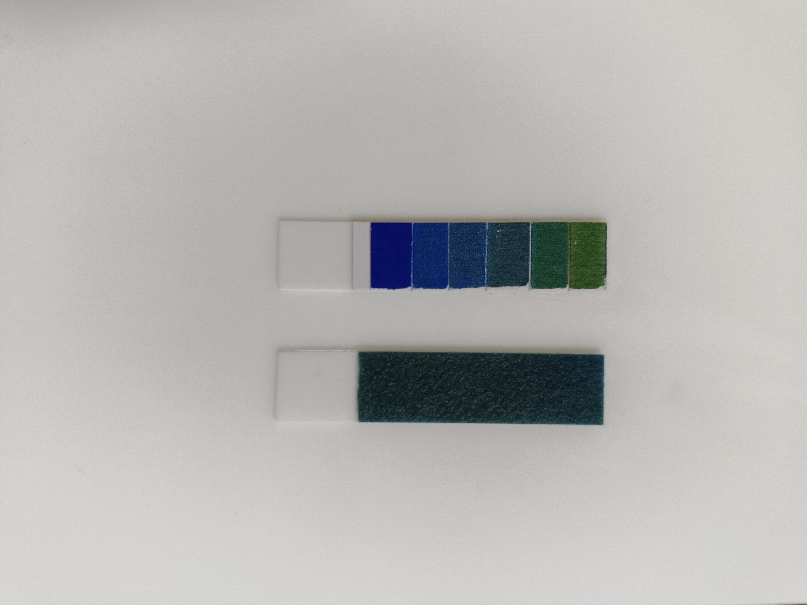

Help & Instructions
Colorimetric test strips provide a low-cost, rapid method for estimating pH and various metabolites in veterinary and agricultural applications, including milk quality assessment and reproductive health monitoring in buffalo. However, traditional visual comparison of strip colour to reference charts is subjective and prone to error due to variations in human colour perception, ambient lighting, and individual interpretation.
This app uses a deep learning model to automate pH estimation from test strip images, providing objective, reproducible, and quantitative results. The approach serves as a proof-of-concept workflow that can be readily extended to other colorimetric assays for metabolites such as progesterone, glucose, urea, and ketones.
The pH test kit consists of three components:
For accurate predictions, the image should contain both the test strip and the reference colour strip placed side by side. The reference strip helps the model normalise for different cameras and lighting conditions.

Place both strips parallel to each other on a flat, light-coloured surface:
Tip: After taking the photo, check the “Auto-cropped” preview. If the crop correctly captures both strips, the prediction will be accurate. If extra objects are included, try retaking with a cleaner background.
The prediction model is based on Xception, a deep convolutional neural network originally trained on over 1 million images (ImageNet). It was fine-tuned specifically for pH prediction using transfer learning on 540 images of pH indicator strips captured under various conditions (indoor light, sunlight/shade, 3 cameras, 3 replicates, pH 5–10).
| Metric | Test Set (unseen strips) |
|---|---|
| Mean Absolute Error (MAE) | 0.283 pH units |
| R² (coefficient of determination) | 0.953 |
| Pearson correlation (r) | 0.977 |
| pH range | 5 – 10 |
| Model format | ONNX (80.5 MB, cached locally) |
| Inference time | ~1–2 seconds (mobile) |
Note: The model was trained on pH values 5–10 (integer steps). Predictions outside this range may be unreliable. The model provides continuous (decimal) predictions but accuracy is highest near the trained pH levels.
The reference colour strip in the image serves as an internal standard, helping the model account for differences in camera sensors, white balance, and ambient lighting — making predictions robust across different devices and environments.
All processing happens on your device. No images are uploaded to any server. The AI model runs entirely in your browser using WebAssembly. After the initial model download (~81 MB on first visit), the app works fully offline — no internet connection needed.
Your photos never leave your device. There is no user tracking, no analytics, and no data collection.
Developed by Dr Mehar Khatkar (Adelaide University) and Dr Ashok Balhara and ICAR-CIRB Team.
Model: Xception (Chollet, 2017) with transfer learning, trained on pH indicator strip images. Web deployment using ONNX Runtime Web (WebAssembly).